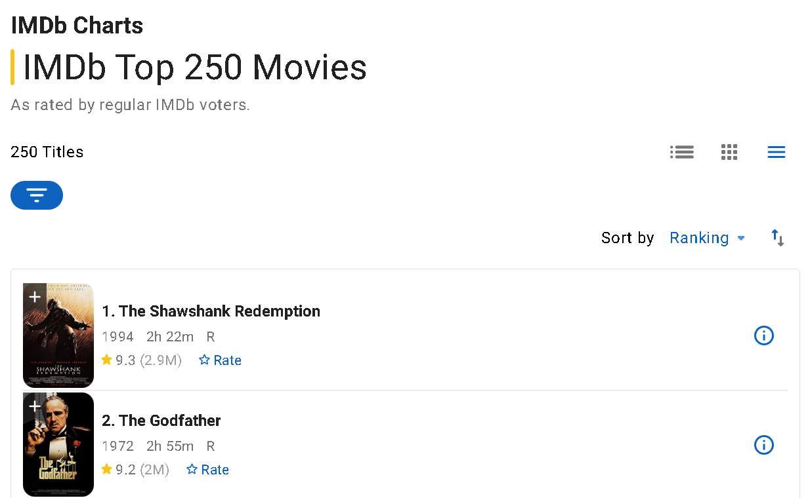

Inspiration
Recently, I watched someone online play a higher or lower game where
they were given the choice of two movies and had to guess which one
had the higher rating. I believed with the skills that I have, I
could make something similar, so I picked up the challenge.
Skills/Tools
- Python
- Selenium
- Pandas
- Tkinter
- Flask
Goals
- Using Selenium, movie titles and the corresponding ratings were
scraped from the IMDB website.
- Saved the info from IMDB to a csv file.
- With the help of Tkinter, built an interface to play the game.
- The interface prompts the player to input a nickname to keep track of scores.
- The game will give two choices. The player will have to choose which
option they believe to have the higher rating. If the correct choice is
given the game continues. If not, the game ends.
- The score is updated on top of the interface page.
- The scores of each player at the end of the game is saved to a csv file.